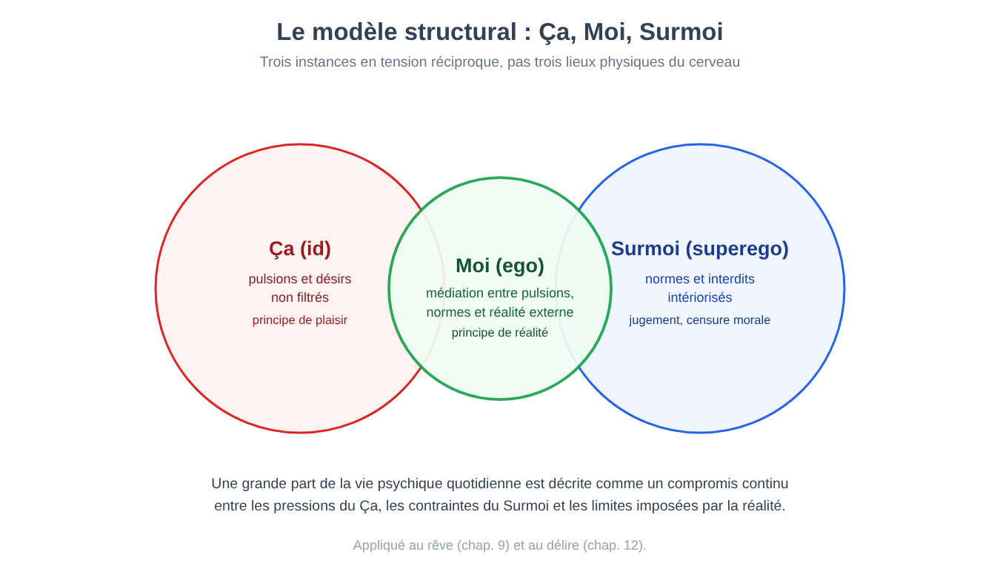
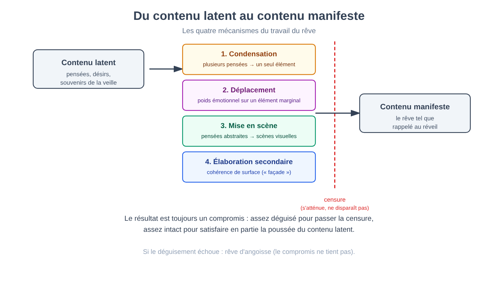
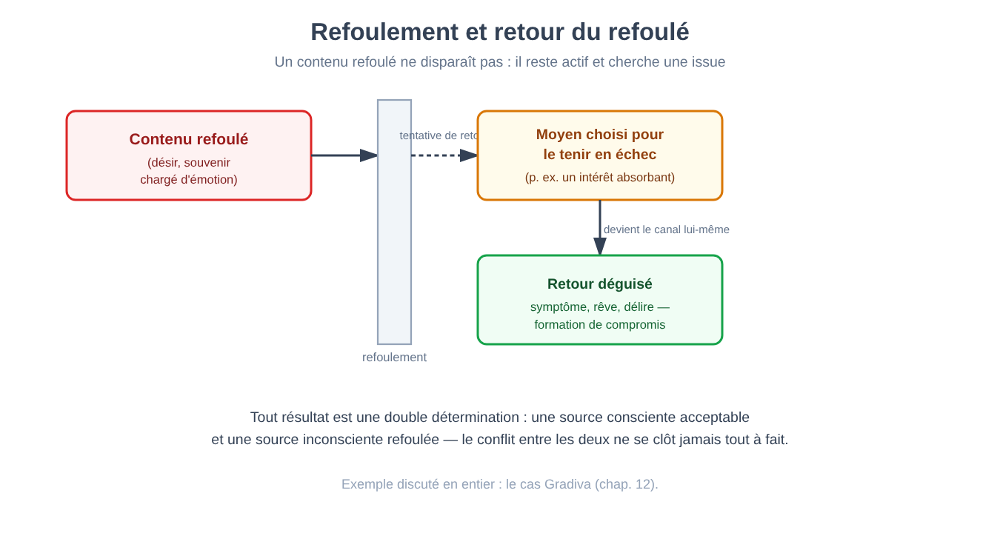
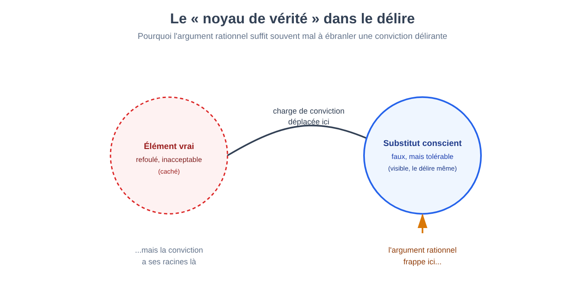
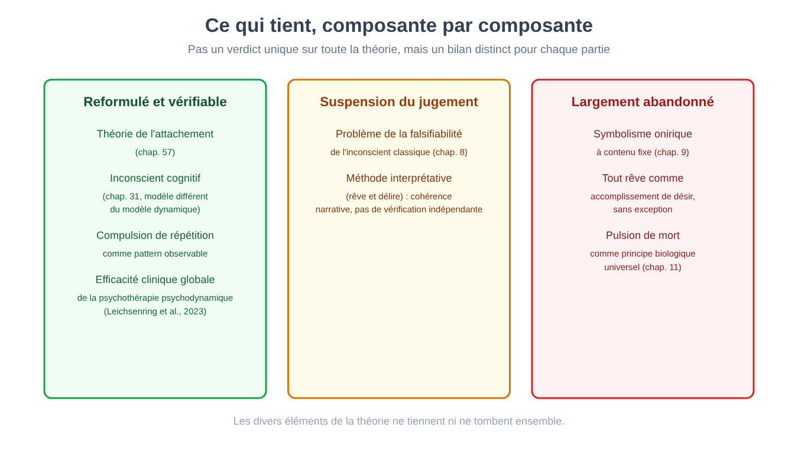

Partie II. L'esprit comme profondeur : la tradition psychanalytique
Chapitre 7 — Avant la psychologie : l'esprit comme objet philosophique
[EN DEUX MOTS]
Avant qu'existe le moindre laboratoire consacré à l'étude de l'esprit, la question de son fonctionnement relevait de la philosophie. Ce chapitre raconte le passage, à la fin du XIXe siècle, d'un esprit étudié à sa table de travail à un esprit mesuré dans un bâtiment, avec des instruments — et montre d'emblée les limites de cette première mesure, en reprenant là où le chapitre 1 s'était interrompu.
Dans le chapitre 1, nous avons laissé une question en suspens : si l'introspection spontanée de chacun n'est pas fiable, que se passe-t-il quand on tente d'en faire une méthode rigoureuse, entraînée, reproductible — et non un simple compte rendu occasionnel ? C'est exactement la tentative qui occupa la psychologie durant ses premières décennies comme discipline autonome, et ses résultats furent, comme nous le verrons, instructifs précisément par leur échec partiel.
D'une question philosophique à une question mesurable
Pendant des siècles, se demander comment naissent les idées, si l'esprit est divisible en parties ou unitaire, d'où vient la connaissance, avait relevé de la philosophie et non de la science expérimentale. Une tradition en particulier prépara le terrain à la psychologie scientifique : l'associationnisme (associationism), la thèse selon laquelle les contenus complexes de l'esprit — idées, souvenirs, concepts — se forment en combinant des éléments plus simples selon des lois régulières, en particulier la contiguïté dans le temps ou dans l'espace (deux choses souvent perçues ensemble tendent à être rappelées ensemble) et la ressemblance. L'associationnisme était encore un programme philosophique, mais il avait une caractéristique nouvelle et importante : il proposait des lois générales, vérifiables en principe, au lieu d'intuitions isolées.
Un second antécédent, plus directement expérimental, fut la psychophysique (psychophysics) : l'étude quantitative de la relation entre l'intensité physique d'un stimulus (la luminosité d'une lumière, le poids d'un objet) et l'intensité de la sensation perçue. La psychophysique démontra, pour la première fois, qu'un aspect de l'esprit — la perception — pouvait être mesuré avec la même précision numérique qu'un phénomène physique, ouvrant la voie à tout ce que nous verrons au chapitre 28, où sa loi fondamentale sera présentée en entier.
Le premier laboratoire et l'introspection comme méthode entraînée
En 1879, à Leipzig, fut fondé ce que l'on considère généralement comme le premier laboratoire entièrement consacré à la recherche psychologique expérimentale. Le principe à la base de ce laboratoire fut exactement celui annoncé au chapitre 1 : transformer l'introspection, de compte rendu spontané et occasionnel, en méthode standardisée. Des observateurs entraînés pendant des mois apprenaient à décomposer une expérience consciente — par exemple, la perception d'un son — en ses éléments constitutifs élémentaires (intensité, qualité, durée), en rapportant ces composantes dans un vocabulaire technique convenu, dans des conditions expérimentales rigoureusement contrôlées et répétées.
[LE PLAN DE L'EXPÉRIENCE]
Ce que l'on voulait découvrir. Si une expérience consciente complexe (par exemple, percevoir un accord musical) pouvait être décomposée de façon fiable en ses éléments sensoriels de base, au moyen de comptes rendus introspectifs entraînés.
Ce que l'on manipulait. Le stimulus présenté (par exemple, la fréquence ou l'intensité d'un son), dans des conditions de laboratoire contrôlées.
Ce que l'on mesurait. Le compte rendu verbal, hautement standardisé, que l'observateur entraîné fournissait sur son expérience consciente immédiate, décomposée selon un vocabulaire technique préétabli.
Quel résultat aurait réfuté l'approche. Si des observateurs différents, tout aussi entraînés, face au même stimulus, avaient rapporté systématiquement des éléments différents et incompatibles entre eux, l'idée même que l'introspection entraînée produise une donnée objective aurait été remise en cause.
Ce qui s'est passé. Précisément cela : des laboratoires différents, aux traditions d'entraînement différentes, aboutirent souvent à des décompositions divergentes de la même expérience, sans moyen indépendant d'établir quel compte rendu était correct. Un cas devenu emblématique concerna la tentative d'établir si la pensée pouvait se produire « sans images » (sans contenus sensoriels associés) — un laboratoire le niait systématiquement, un autre le confirmait systématiquement, et aucune expérience indépendante des comptes rendus eux-mêmes ne permettait d'arbitrer entre les deux positions.
[QUESTION CONTROVERSÉE]
Le problème n'est pas ici le même qu'au chapitre 1. Là, le problème était la confabulation : une explication erronée ressentie comme correcte. Ici, le problème est plus subtil : même en supposant une pleine bonne foi et un entraînement maximal, il n'existait aucun moyen de vérifier le compte rendu introspectif en le confrontant à une donnée indépendante — exactement l'exigence de validité de construit discutée au chapitre 3. Un thermomètre peut être étalonné en le comparant à un autre thermomètre indépendant ; un observateur entraîné n'avait, pour s'étalonner, rien d'autre qu'un autre observateur entraîné dans la même tradition.
Pourquoi cette tentative ne fut pas un gaspillage
Ce serait une erreur de lire cette première tentative comme une impasse sans héritage. Le laboratoire de Leipzig établit, avant toute chose, que l'esprit pouvait être l'objet d'une mesure systématique et répétée, et pas seulement d'une réflexion philosophique isolée — une condition préalable sans laquelle aucun des chapitres suivants de ce livre n'aurait pu exister. Il établit aussi, par contraste et de façon tout aussi importante, les limites de l'introspection même dans sa forme la plus disciplinée : une observation qui allait conduire, dans la première moitié du XXe siècle, au rejet radical de toute donnée introspective par le comportementalisme (Partie III) et, par une voie tout à fait différente, à la proposition qu'une grande part de la vie mentale échappe par principe à la conscience — l'hypothèse au centre du prochain chapitre.
Une autre ligne, presque contemporaine, mérite d'être mentionnée : aux États-Unis se développa une approche moins soucieuse de décomposer l'expérience en éléments statiques, et plus soucieuse de se demander à quoi sert un processus mental donné dans l'adaptation de la personne à son environnement — une orientation connue sous le nom de fonctionnalisme (functionalism), qui déplacera l'attention de la structure de la conscience vers sa fonction, un intérêt pour ce que fait le comportement et non pour ce que contient la conscience.
[L'ESSENTIEL DU CHAPITRE]
• L'associationnisme (lois générales de combinaison des idées) et la psychophysique (mesure quantitative de la perception) préparèrent le terrain d'une psychologie expérimentale autonome.
• Le premier laboratoire spécialisé (1879) transforma l'introspection en une méthode entraînée et standardisée.
• La limite de cette méthode n'était pas la confabulation du chapitre 1, mais l'absence de moyen indépendant de vérifier les comptes rendus introspectifs, même lorsqu'ils étaient donnés de bonne foi par des observateurs entraînés.
• Cette limite ouvrit deux voies opposées, que le livre suit toutes les deux : le rejet total des données intérieures (comportementalisme, Partie III) et l'hypothèse d'un esprit en grande partie inaccessible à la conscience elle-même (psychanalyse, à partir du prochain chapitre).
Chapitre 8 — L'hypothèse de l'inconscient
[EN DEUX MOTS]
Si l'introspection, même entraînée, ne parvient pas à accéder à toute la vie mentale, c'est peut-être qu'une partie de cette vie mentale n'est, par principe, pas accessible à la conscience. Ce chapitre expose l'hypothèse de l'inconscient, ce qu'elle était censée expliquer, et pourquoi sa force explicative même — capable de rendre compte de presque tout — est aussi son problème méthodologique le plus sérieux.
As-tu déjà appelé une personne par un mauvais prénom — peut-être celui d'un ex, ou de quelqu'un à qui tu pensais à ce moment-là sans le savoir ? Le sens commun écarte l'épisode comme une simple distraction. Une autre tradition, qui occupe ce chapitre et les cinq suivants, proposa au contraire de le prendre au sérieux comme un indice : et si une erreur de ce genre n'était pas fortuite, mais le produit d'une pensée active, présente dans l'esprit, mais non admise à la conscience ?
Une hypothèse introduite par nécessité explicative
L'hypothèse psychanalytique de l'inconscient (the unconscious) ne naît pas comme une spéculation philosophique abstraite sur la nature de l'esprit, mais comme une tentative de rendre compte d'un ensemble de phénomènes cliniques que le modèle de l'esprit comme pure conscience n'arrivait pas à expliquer. Trois catégories de phénomènes furent centrales :
Les actes manqués (parapraxes) — lapsus, oublis de noms ou de rendez-vous, fautes d'écriture — qui, dans la lecture psychanalytique, ne sont pas un bruit aléatoire du système cognitif mais le produit d'une intention conflictuelle : une pensée qui pousse pour s'exprimer tandis qu'une autre l'entrave, le compromis entre les deux affleurant dans l'erreur elle-même.
Les symptômes des névroses alors observées en milieu clinique — paralysies sans aucune cause neurologique identifiable, par exemple — qui semblaient exprimer sous forme corporelle un contenu psychique que le patient n'était pas en mesure de reconnaître consciemment comme sien.
L'oubli sélectif : le fait que certains souvenirs, souvent les plus chargés émotionnellement, se révélaient systématiquement plus difficiles à rappeler que d'autres, sans qu'on puisse l'expliquer par le simple déclin dû au temps que nous traiterons au chapitre 38.
Pour rendre compte de ces trois phénomènes par un principe unique, l'hypothèse proposée (Freud, à partir des années 1890) fut que l'esprit contient des contenus — pensées, désirs, souvenirs — actifs et capables d'influencer le comportement et l'expérience, mais non admis à l'introspection consciente. Non pas simplement oubliés au sens ordinaire du terme, mais tenus à l'écart de la conscience par un processus actif, que le chapitre 10 appellera refoulement.
Pourquoi c'est une hypothèse difficile à mettre à l'épreuve
Ici, le propos du chapitre devient intéressant et honnête plutôt qu'apologétique : l'hypothèse de l'inconscient pose un problème méthodologique que les autres hypothèses rencontrées jusqu'ici dans le livre ne posent pas au même degré. Une expérience, comme on l'a vu au chapitre 2, doit préciser à l'avance quel résultat la réfuterait. L'inconscient, tel qu'il fut formulé à l'origine, est difficile à réfuter : n'importe quel comportement — y compris l'absence d'un symptôme prévu, que l'on peut toujours attribuer à une défense particulièrement efficace — peut être rendu compatible avec l'hypothèse par une interprétation a posteriori. Ce problème, connu sous le nom de problème de la falsifiabilité (falsifiability problem) — l'exigence philosophique qu'une théorie scientifique précise des conditions dans lesquelles elle serait considérée comme fausse — a été soulevé avec force par la philosophie des sciences à partir des années 1930 (Popper, 1934), et reste l'un des points les plus discutés de toute cette tradition, comme nous le verrons en entier au chapitre 13.
[ATTENTION AU SAUT LOGIQUE]
Dire qu'une théorie pose un problème de falsifiabilité n'équivaut pas à dire qu'elle est fausse, ni que les phénomènes qu'elle décrit (l'existence d'actes manqués systématiques, l'existence de contenus mentaux inaccessibles à la conscience) sont inventés. Le problème est plus spécifique : il concerne la question de savoir si la théorie, dans sa forme classique, permet de distinguer à l'avance un résultat qui la confirmerait d'un résultat qui la réfuterait. Comme nous le verrons au chapitre 31, l'idée qu'une grande part du traitement mental se déroule hors de la conscience a été reprise ensuite, sous une forme différente et plus facilement vérifiable expérimentalement, par la psychologie cognitive — un cas intéressant de deux traditions très éloignées par leur méthode qui convergent vers une intuition semblable.
Un modèle de l'esprit en conflit structurel
L'hypothèse de l'inconscient ne resta pas isolée : elle se développa en un modèle plus vaste de l'esprit comme structure articulée en instances en tension réciproque — un Ça (id) porteur de pulsions et de désirs non filtrés, un Surmoi (superego) intériorisation des normes et des interdits appris, et un Moi (ego) qui médie entre les pressions de l'un, les contraintes de l'autre et les exigences de la réalité extérieure. Dans ce modèle, une grande partie de la vie psychique quotidienne est décrite comme le produit d'un compromis continu entre des instances en conflit — une idée que nous retrouverons, appliquée au cas particulier du rêve, dans le prochain chapitre, et appliquée au cas du délire au chapitre 12.

[MINI-CHRONOLOGIE]
L'hypothèse de l'inconscient, formulée dans ses termes classiques entre la fin du XIXe siècle et les premières décennies du XXe, précède de quelques décennies la découverte, discutée au chapitre 30 et au chapitre 31, qu'une part substantielle du traitement de l'information par le cerveau — de la perception à la décision — se déroule effectivement hors de la conscience. Le chapitre 31 confrontera explicitement les deux modèles d'« inconscient », le psychanalytique et le cognitif, en montrant où ils se ressemblent et où ils sont, en fait, des hypothèses très différentes malgré le nom partagé.
[L'ESSENTIEL DU CHAPITRE]
• L'hypothèse de l'inconscient naît pour expliquer trois phénomènes : actes manqués, symptômes sans cause organique évidente, oubli sélectif.
• Elle propose que des contenus mentaux actifs puissent rester hors de la conscience par un processus actif (refoulement, chapitre 10), et non par simple oubli.
• Le problème de la falsifiabilité — la difficulté de préciser à l'avance un résultat qui réfuterait l'hypothèse — est le nœud méthodologique le plus discuté de cette tradition, repris en entier au chapitre 13.
• Le modèle structural Ça/Moi/Surmoi décrit la vie psychique comme un compromis continu entre des instances en conflit, une idée appliquée au rêve au chapitre 9 et au délire au chapitre 12.
• Une hypothèse à certains égards voisine — selon laquelle une grande part du traitement mental est inconsciente — a été reformulée en termes vérifiables par la psychologie cognitive (chapitres 30–31), avec d'importantes différences par rapport à la version psychanalytique.
Chapitre 9 — Le travail du rêve
[EN DEUX MOTS]
Si l'inconscient existe, le rêve fut proposé comme l'une de ses voies d'accès les plus directes. Ce chapitre expose la méthode par laquelle la psychanalyse classique interprète un rêve — non comme un contenu déjà complet, mais comme le produit d'une transformation active, le travail du rêve, dont le chapitre décrit les quatre mécanismes.
Presque tout le monde, au réveil, a éprouvé la sensation que son rêve « n'avait aucun sens » : des scènes qui s'enchaînent sans logique narrative claire, des personnes qui se transforment en d'autres personnes, des lieux impossibles. La proposition au centre de ce chapitre est que cette absence de sens n'est qu'apparente : le rêve tel que nous le mémorisons — le contenu manifeste (manifest content) — serait le résultat d'une transformation systématique d'un matériau de départ plus étendu et plus cohérent, appelé contenu latent (latent content) : l'ensemble des pensées, désirs et souvenirs (en partie des éléments de la veille, en partie des désirs plus anciens) que le travail du rêve élabore et déguise.
Les quatre mécanismes du travail du rêve
Le travail du rêve (dream work) est, selon cette théorie (Freud, L'interprétation des rêves, 1899-1900), le processus psychique qui transforme le contenu latent en contenu manifeste, au moyen de quatre mécanismes distincts.
La condensation (condensation) comprime plusieurs pensées latentes en un seul élément du rêve manifeste, qui se trouve ainsi surdéterminé — c'est-à-dire ramené, dans l'analyse, à plus d'une source à la fois. Un seul personnage onirique peut condenser les traits de plusieurs personnes réelles ; une seule image peut fusionner plusieurs souvenirs distincts.
Le déplacement (displacement) redistribue l'intensité émotionnelle : le contenu psychiquement le plus significatif d'une pensée latente est souvent transféré sur un élément apparemment secondaire du rêve manifeste, tandis que l'élément central du rêve peut se révéler, étonnamment, émotionnellement neutre. Ce mécanisme — décrit comme une sorte de « transvaluation des valeurs psychiques » — explique pourquoi un rêve peut sembler se concentrer sur un détail banal alors que le véritable poids émotionnel est ailleurs, déplacé.
La mise en scène (dramatisation; chez Freud, la prise en considération de la figurabilité) convertit des pensées abstraites et verbales en scènes concrètes et visuelles, les relations logiques complexes (cause-effet, négation, alternative « ou ceci ou cela ») étant réduites à un vocabulaire pictural bien plus pauvre — raison pour laquelle les rêves, lus comme des séquences narratives logiques, semblent souvent dépourvus de connecteurs et de structure argumentative.
L'élaboration secondaire (secondary elaboration) intervient en dernier, imposant une cohérence de surface au matériau déjà condensé, déplacé et mis en scène — construisant ce que l'on appelle la « façade du rêve » : un récit apparemment sensé qui masque, plus qu'il ne révèle, le travail de transformation accompli en dessous.

[LE PLAN DE L'EXPÉRIENCE]
La méthode, exposée comme procédure. Le patient rapporte le contenu manifeste du rêve. L'analyste ne l'interprète pas symboliquement de façon directe, élément par élément selon un code fixe, mais demande au patient de produire des associations libres (free association) — tout ce qui lui vient à l'esprit, sans censure ni sélection, à partir de chaque élément du rêve. Le contenu latent est reconstruit en suivant les chaînes associatives du patient, et non en appliquant une clé de lecture universelle.
Le problème pour la vérification indépendante. Cette méthode pose une difficulté structurelle, distincte du problème de la falsifiabilité déjà discuté au chapitre 8 : le contenu latent reconstruit dépend de façon substantielle des associations fournies par le patient pendant la séance elle-même, guidées à leur tour par les questions de l'analyste. Il n'existe pas, à l'intérieur de la méthode elle-même, de moyen indépendant de vérifier que la reconstruction proposée correspond au processus psychique qui a effectivement engendré le rêve, plutôt que d'être un récit plausible construit a posteriori conjointement par le patient et l'analyste — un risque à certains égards comparable, bien que dans un contexte tout à fait différent, à la confabulation discutée au chapitre 1.
Pourquoi le rêve devrait se déguiser
Reste à expliquer pourquoi, si le contenu latent existe, il ne se présente pas directement à la conscience pendant le sommeil. La réponse proposée invoque une censure (censorship) : une barrière psychique, la même qui, à l'état de veille, tient hors de la conscience les contenus refoulés (chapitre 8), et qui se relâche pendant le sommeil sans disparaître tout à fait. Ce qui émerge dans le rêve est donc toujours un compromis : assez déguisé pour pouvoir être toléré par la censure, assez intact pour satisfaire, au moins en partie, la poussée du contenu latent à s'exprimer. Dans les cas où le déguisement échoue et où un contenu émerge trop peu masqué, le résultat proposé est le rêve d'angoisse : le dormeur se réveille effrayé, parce que le compromis n'a pas tenu.
Cette lecture conduit à une thèse plus générale et plus exigeante : le rêve, dans cette théorie, représenterait toujours, sous forme déguisée ou non, la réalisation d'un désir — l'accomplissement de désir (wish-fulfillment). Dans les rêves d'enfants, selon cette théorie, le désir apparaît souvent de façon directe et reconnaissable (l'enfant qui rêve du gâteau qui lui a été refusé pendant la journée) ; dans la plupart des rêves d'adultes, le désir serait méconnaissable tant que la condensation, le déplacement et la mise en scène ne sont pas, pour ainsi dire, défaits par l'analyse.
Une fonction complémentaire attribuée au rêve est celle de gardien du sommeil (guardian of sleep) : en hallucinant la satisfaction d'un désir interne perturbateur, ou en neutralisant un stimulus externe (un bruit, une sensation physique), le rêve permettrait au dormeur de continuer à dormir au lieu de se réveiller — une sorte de sentinelle nocturne qui réveille le dormeur, par l'angoisse, seulement quand la perturbation est jugée trop sérieuse pour être gérée autrement.
[QUESTION CONTROVERSÉE]
La thèse selon laquelle chaque rêve, sans exception, représente un accomplissement de désir — même lorsqu'il se présente comme un cauchemar terrifiant — est l'une des affirmations les plus ambitieuses et les plus contestées de cette théorie, et le cadre théorique lui-même reconnaît des exceptions partielles (les rêves récurrents dans les traumatismes, que nous verrons abordés directement au chapitre 11, où la théorie elle-même dut réviser cette thèse). La recherche contemporaine sur le sommeil (chapitre 26) décrit le rêve avec des outils et des questions en grande partie différents — l'activation de réseaux neuronaux spécifiques pendant le sommeil paradoxal (REM), le rôle du rêve dans la consolidation de la mémoire — et ne traite généralement pas le déguisement d'un désir refoulé comme l'explication principale de la plupart des contenus oniriques. Les deux perspectives ne sont pas nécessairement incompatibles sur tous les points, mais elles répondent à des questions suffisamment différentes pour rendre une comparaison directe, point par point, plus ardue qu'il n'y paraît.
Le symbolisme onirique : un ajout ultérieur et plus controversé
À côté des mécanismes individuels du travail du rêve, cette théorie proposa aussi un niveau distinct de symbolisme onirique (dream symbolism) : un répertoire de correspondances fixes et partagées culturellement (par exemple, des objets allongés comme représentation symbolique d'organes sexuels masculins) qui ne serait pas le produit d'une association personnelle du rêveur, mais un vocabulaire préexistant, que l'on retrouve aussi dans les mythes et les récits populaires. Cette partie de la théorie, qui attribue un poids systématique aux contenus sexuels dans la vie onirique adulte, est parmi les plus spéculatives et les moins soutenues par des vérifications indépendantes de tout l'édifice, et doit être distinguée, pour juger de sa solidité, des mécanismes de condensation et de déplacement décrits plus haut, qui demeurent — comme description de la façon dont un matériau est transformé, indépendamment de ce que l'on suppose qu'il contienne toujours — une contribution conceptuelle plus durable ; la recherche sur le sommeil (chapitre 26) aborde le rêve avec des outils différents, sans avoir vérifié ces mécanismes.
[L'ESSENTIEL DU CHAPITRE]
• Le rêve manifeste (mémorisé) est le produit d'une transformation d'un contenu latent plus étendu, par le travail du rêve.
• Les quatre mécanismes sont la condensation, le déplacement, la mise en scène et l'élaboration secondaire.
• La méthode des associations libres reconstruit le contenu latent, mais sans moyen indépendant de vérifier la reconstruction — un problème distinct de celui de la falsifiabilité (chapitre 8), mais apparenté.
• La censure explique pourquoi le contenu latent se présente déguisé ; le rêve comme accomplissement de désir et comme gardien du sommeil sont les deux fonctions proposées.
• Le symbolisme onirique à contenu fixe, en particulier sexuel, est la partie la plus spéculative et la moins vérifiable de la théorie, à distinguer des quatre mécanismes généraux du travail du rêve.
Chapitre 10 — Refoulement, défenses, retour du refoulé
[EN DEUX MOTS]
Le refoulement n'est pas un simple oubli : c'est, dans cette théorie, un processus actif qui tient un contenu hors de la conscience sans le détruire. Ce chapitre montre pourquoi le contenu refoulé ne disparaît jamais réellement, et comment il tend à « revenir » — souvent par le moyen même choisi pour le tenir en respect.
Le chapitre 8 a introduit l'inconscient comme réceptacle de pensées non admises à la conscience. Ce chapitre s'occupe du mécanisme spécifique qui les maintient là : le refoulement (repression), défini comme un type particulier d'oubli, distinct de l'oubli ordinaire que nous traiterons au chapitre 38. Un souvenir oublié au sens commun du terme est, pour ainsi dire, éteint : non plus accessible, mais aussi non plus psychiquement actif. Un contenu refoulé, dans cette théorie, reste en revanche actif — il continue d'exercer une influence sur le comportement et l'expérience, tout en demeurant inaccessible à l'introspection directe.
Un principe inattendu : le refoulé revient par son propre moyen
L'un des aspects les plus originaux de cette théorie est l'idée que le contenu refoulé ne revient pas nécessairement par une brèche dans la défense qui le retenait, mais souvent précisément à travers cette même défense. Le mécanisme choisi pour tenir en respect une pensée inacceptable peut devenir, paradoxalement, le canal par lequel cette pensée se manifeste de nouveau, sous forme transformée. Un intérêt intellectuel cultivé apparemment comme diversion face à un désir inacceptable peut, avec le temps, se remplir de contenus renvoyant précisément à ce désir — non pas malgré l'intérêt choisi comme défense, mais précisément à travers lui.
[IDÉE REÇUE]
« Refouler une pensée », dans le langage courant, signifie souvent simplement « cesser d'y penser », par un effort de volonté consciente. Dans la théorie exposée ici, le refoulement est par définition un processus qui agit hors de la conscience : si une personne choisissait consciemment de ne pas penser à quelque chose, ce ne serait pas du refoulement mais de la suppression volontaire — un phénomène différent, distinct et plus facilement étudiable par des méthodes expérimentales, que nous rencontrerons au chapitre 38 à propos des mécanismes de l'oubli.
Le délire comme cas limite
Un cas particulièrement instructif de retour du refoulé est celui du délire (delusion), que le chapitre 12 traitera en entier : dans cette lecture, un délire n'est pas une pensée arbitraire ou dépourvue de sens, mais une formation de compromis dans laquelle un élément réellement refoulé — souvent un désir ou un souvenir affectif — réapparaît transformé, mêlé à un contenu conscient plus acceptable, avec une conviction d'autant plus tenace que sa véritable source reste inaccessible. Nous n'anticipons ici que le principe général : nous verrons au chapitre 12 comment cette lecture a été appliquée en détail à un cas concret.

Ce qu'il en reste dans la recherche contemporaine
La notion qu'un contenu émotionnellement chargé puisse être systématiquement plus difficile à rappeler qu'un contenu neutre, et que ce processus puisse se produire sans intention consciente, n'est pas restée confinée à la théorie psychanalytique classique : la recherche expérimentale sur la mémoire (chapitre 38) a développé des paradigmes pour étudier des phénomènes apparentés — l'inhibition par la récupération, la suppression motivée — avec des plans expérimentaux falsifiables au sens plein discuté au chapitre 2, distincts du mécanisme de refoulement décrit ici mais pas tout à fait étrangers à celui-ci dans l'esprit. Le chapitre 38 reviendra sur cette comparaison de façon explicite, en se demandant dans quelle mesure le refoulement classique survit, sous une forme modifiée et vérifiable, dans ces paradigmes.
[L'ESSENTIEL DU CHAPITRE]
• Le refoulement est un oubli actif : le contenu refoulé reste psychiquement actif, à la différence de l'oubli ordinaire.
• Le contenu refoulé tend à revenir, souvent précisément par le moyen choisi pour le tenir en respect — pas nécessairement par une faille dans la défense.
• Le délire, traité en entier au chapitre 12, est le cas limite de ce retour : une formation de compromis entre le refoulé et le conscient.
• Le refoulement doit être distingué de la suppression volontaire, un processus conscient et différent.
• La recherche expérimentale sur la mémoire (chapitre 38) étudie des phénomènes apparentés avec des méthodes falsifiables, dans une comparaison que ce chapitre reprendra explicitement.
Chapitre 11 — Pulsions, répétition, agressivité
[EN DEUX MOTS]
Si l'esprit cherche toujours et seulement à réduire la tension et à obtenir du plaisir, pourquoi certaines personnes répètent-elles, apparemment sans aucun bénéfice, des expériences douloureuses ? Ce chapitre expose la partie la plus spéculative et la plus controversée de tout l'édifice psychanalytique : une hypothèse qui naît d'une observation clinique solide mais aboutit à l'une des constructions théoriques les plus ambitieuses et les moins vérifiables de cette tradition.
Le principe de plaisir et sa limite
Le point de départ de cette théorie (Freud, Au-delà du principe de plaisir, 1920, qui reprend des concepts formulés dès 1900 et 1911) est le principe de plaisir (pleasure principle) : l'idée que les processus mentaux sont régulés automatiquement de manière à éviter la tension déplaisante et à en rechercher la réduction. Le principe de réalité (reality principle) en est une modification : la capacité du Moi à tolérer une gratification différée, en vue d'un plaisir plus grand et plus sûr dans l'avenir — le report, non le renoncement.
Le problème qui ouvre ce chapitre est que certains phénomènes cliniques semblent contredire le principe de plaisir lui-même dans sa forme la plus large. Des patients qui avaient vécu des événements traumatiques les revivaient dans des rêves récurrents, avec un réalisme angoissant — une exception directe à la thèse, exposée au chapitre 9, selon laquelle chaque rêve représenterait un accomplissement de désir : ici, aucun désir visible n'est accompli, seulement la répétition quasi littérale de l'événement douloureux.
[LE PLAN DE L'EXPÉRIENCE]
L'observation à l'origine de la théorie. Un enfant d'environ un an et demi, observé alors qu'il joue seul, répète continuellement un jeu simple : il lance loin de lui une bobine attachée à un fil, en prononçant un son interprété comme correspondant à « parti » (fort), puis la ramène à lui et l'accueille avec un son interprété comme « voilà » (da) — le jeu dit du Fort/Da.
L'interprétation proposée. Le jeu est lu comme une mise en scène répétée du départ et du retour de la mère — un événement vécu passivement par l'enfant (qui n'a aucun contrôle sur les absences maternelles) et transformé ici en un événement contrôlé activement, où c'est l'enfant lui-même qui décide quand l'objet disparaît et quand il revient.
Pourquoi c'est un cas limite pour le principe de plaisir. Même en admettant que se rendre actif par rapport à un événement subi passivement apporte un bénéfice psychologique (un gain de contrôle), l'enfant répète avec une insistance particulière précisément la partie déplaisante de la séquence — la disparition de l'objet — et pas seulement la partie joyeuse de son retour. D'où l'hypothèse d'une poussée à répéter qui opère indépendamment, et parfois contre, la recherche du plaisir immédiat.
À partir d'observations de ce type — le jeu de l'enfant, les rêves traumatiques, et un troisième phénomène observé au cours des traitements eux-mêmes, où les patients semblaient répéter des schémas relationnels douloureux de leur passé dans le rapport à l'analyste au lieu de simplement s'en souvenir — fut proposée l'existence d'une compulsion de répétition (repetition-compulsion) : une poussée, située dans l'inconscient refoulé, à répéter des expériences passées — surtout douloureuses et infantiles — comme réalité présente, au lieu de les revivre comme souvenir. Une poussée décrite comme plus primitive que le principe de plaisir, et capable de le dépasser.
Le pas le plus spéculatif : la pulsion de mort
De là, la théorie accomplit un pas supplémentaire, explicitement présenté par son auteur lui-même comme plus spéculatif que toute autre partie de l'édifice décrit jusqu'ici. Si toute pulsion est par nature conservatrice — elle tend c'est-à-dire à rétablir un état antérieur, comme le montre la compulsion de répétition elle-même — et si la vie organique, de fait, se termine toujours par la mort pour des causes internes à l'organisme lui-même, alors la poussée pulsionnelle la plus profonde de tout être vivant devrait être, paradoxalement, le retour à l'état inanimé qui précède la vie : une pulsion de mort (death instinct, Todestrieb), dont le but ultime serait la mort elle-même. En tension avec cette poussée se situerait l'Éros : les pulsions sexuelles généralisées en force vitale de liaison et de complexité croissante, qui diffère le retour à l'inorganique.
Un principe plus profond encore, le principe de Nirvana (Nirvana principle), est proposé comme la couche la plus fondamentale sous-jacente au principe de plaisir lui-même : la tendance psychique à réduire l'excitation interne au niveau le plus bas ou le plus constant possible.
[QUESTION CONTROVERSÉE]
La pulsion de mort est, selon toute probabilité, l'hypothèse la plus contestée de toute la tradition psychanalytique, contestée ouvertement même par des analystes ultérieurs appartenant à la même tradition. Le raisonnement qui la soutient procède par analogie biologique (le caractère conservateur des pulsions, la mort comme issue interne de la vie) plus que par observation clinique directe, et il est explicitement présenté, dans le texte qui la propose, comme une tentative spéculative dont l'auteur lui-même reconnaît ouvertement les limites. Elle doit être distinguée, pour juger de sa solidité, de la compulsion de répétition : cette dernière repose sur des observations cliniques (les rêves traumatiques, le jeu enfantin, les schémas relationnels répétés en thérapie) relativement plus solides, bien qu'elles soient elles aussi interprétées à l'intérieur d'un cadre théorique spécifique et non testées avec les plans expérimentaux du chapitre 2.
Un parallèle qui mérite d'être noté
Il existe une convergence conceptuelle qui mérite d'être signalée explicitement, bien qu'il s'agisse de traditions radicalement différentes par la méthode : la poussée à répéter un comportement même lorsqu'il cesse de produire un bénéfice évident n'est pas étrangère à ce que nous verrons, avec des outils expérimentaux tout à fait différents, à propos des programmes de renforcement à rapport variable au chapitre 17 — où un comportement (par exemple le jeu d'argent) peut se révéler extrêmement résistant à l'extinction précisément en raison de son imprévisibilité, et non d'un gain constant. Les deux explications — l'une pulsionnelle, l'autre associée au renforcement intermittent — restent distinctes et non interchangeables, mais toutes deux se confrontent à la même énigme comportementale : la persistance d'un schéma qui n'est plus, ou n'a jamais été tout à fait, avantageux.
Sur le plan de l'agressivité, cette théorie va jusqu'à proposer que les comportements sadiques et masochistes puissent être lus comme des manifestations directes de la pulsion de mort — dans le sadisme, dirigée vers un objet extérieur ; dans le masochisme, repliée sur le soi. Cette application spécifique partage elle aussi le caractère fortement spéculatif de l'hypothèse dont elle découle, et doit être lue avec la même prudence.
[L'ESSENTIEL DU CHAPITRE]
• Le principe de plaisir règle l'esprit vers la réduction de la tension ; le principe de réalité en tolère le report.
• Les rêves traumatiques et le jeu du Fort/Da motivent l'hypothèse d'une compulsion de répétition, plus primitive que le principe de plaisir.
• De là, la théorie propose, de façon explicitement spéculative, une pulsion de mort en tension avec l'Éros, et un principe de Nirvana plus profond encore que le principe de plaisir.
• La pulsion de mort est la partie la plus contestée de la théorie, même au sein de la tradition psychanalytique ultérieure.
• La persistance de comportements qui ne sont plus avantageux trouve un parallèle conceptuel, non une équivalence, dans les programmes de renforcement à rapport variable du chapitre 17.
Chapitre 12 — Le délire comme construction avec un noyau de vérité
[EN DEUX MOTS]
Ce chapitre applique à un cas concret les principes déjà rencontrés — refoulement, retour du refoulé, formation de compromis — en montrant comment, dans cette lecture, un délire n'est pas une pensée arbitraire mais une construction élaborée autour d'un élément réellement refoulé, avec une conviction tenace précisément parce qu'elle est déplacée de son véritable objet vers un substitut plus tolérable.
Double détermination et formation de compromis
Le chapitre 10 avait introduit le délire comme cas limite du retour du refoulé. Ici, le mécanisme est précisé : chaque symptôme, dans cette lecture, a une double détermination (twofold determination) — une source consciente et acceptable, et une source inconsciente et érotique — et, comme le conflit entre les deux ne se résout jamais tout à fait, la formation de compromis (compromise-formation) qui en résulte se renouvelle continuellement, au lieu de s'épuiser en un épisode unique.
Un principe distinctif de cette lecture est qu'un délire contient toujours un noyau de vérité (grain of truth) : un élément réellement refoulé, authentique, dont la charge de conviction est toutefois déplacée — dans le même sens du déplacement rencontré au chapitre 9 à propos des rêves — de l'élément vrai, inacceptable, vers un substitut conscient, faux mais plus tolérable. Cela explique, dans cette lecture, un trait clinique souvent observé : l'extrême difficulté d'ébranler un délire par le simple argument rationnel, parce que l'argument frappe le substitut conscient, tandis que la conviction plonge ses racines dans l'élément vrai et refoulé que l'argument n'atteint pas.

[LE PLAN DE L'EXPÉRIENCE]
Le cas analysé. Une analyse psychanalytique (Freud, Le délire et les rêves dans la « Gradiva » de Jensen, 1907) appliquée non à un patient réel en traitement, mais à une œuvre de fiction — un procédé qui permet d'exposer avec une clarté didactique la méthode interprétative, tout en ne pouvant pas, par la nature même du matériau, être soumis à une vérification clinique indépendante.
Le matériau. Le protagoniste, un archéologue, développe une fixation délirante sur un bas-relief antique représentant une femme à la démarche particulière, au point de croire pouvoir en rencontrer l'esprit parmi les ruines d'une cité ensevelie.
L'interprétation proposée. L'intérêt archéologique du protagoniste, apparemment éloigné de tout contenu affectif, est lu comme le moyen même par lequel un affect refoulé — un amour d'enfance oublié pour une compagne réelle, dont la façon de marcher ressemblait à celle de la figure sculptée — trouve la voie pour réapparaître, déguisé en intérêt professionnel : un cas concret du principe, déjà rencontré au chapitre 10, selon lequel le refoulé revient souvent précisément par le moyen choisi pour le tenir en respect.
La limite de la méthode, de nouveau. Comme déjà noté à propos de l'interprétation des rêves (chapitre 9), ici aussi la reconstruction de la source refoulée procède par cohérence narrative interne au récit lui-même, et non par confrontation avec une donnée clinique indépendante — une limite encore plus contraignante dans ce cas, puisqu'il s'agit d'un matériau de fiction littéraire plutôt que d'un compte rendu clinique réel.
Ce que changerait la guérison, dans cette lecture
Un point pertinent de cette lecture du cas est que la simple récupération consciente du souvenir refoulé ne suffirait pas à elle seule à dissoudre le délire : un second pas serait nécessaire, distinct du premier — le réel réengagement émotionnel lié à ce souvenir, et pas seulement sa connaissance intellectuelle. Cette distinction entre savoir un fait refoulé et en ressentir réellement l'émotion associée anticipe, sous une forme rudimentaire, une distinction que la psychothérapie contemporaine (chapitre 76) formulera en termes très différents et vérifiables empiriquement, à propos de la question de savoir quelles composantes d'un traitement produisent effectivement un changement.
[TIENT-ON ENCORE ?]
La comparaison directe entre cette lecture psychanalytique du délire et les modèles développés par la psychologie cognitive contemporaine — qui expliquent la formation et le maintien des délires cliniques en termes de biais de raisonnement, d'anomalies du traitement perceptif et de tentatives de donner un sens à une expérience anormale — est une comparaison que nous aborderons en entier au chapitre 58. Nous anticipons seulement ici que les deux perspectives partagent une intuition structurelle (le délire comme construction de sens autour d'un noyau, et non comme pensée purement aléatoire) tout en partant de présupposés sur le fonctionnement mental très différents, et qu'il serait erroné de les présenter comme interchangeables.
[L'ESSENTIEL DU CHAPITRE]
• Chaque symptôme, dans cette lecture, a une double détermination (consciente et inconsciente) et résulte d'une formation de compromis qui se renouvelle dans le temps.
• Un délire contiendrait toujours un noyau de vérité, dont le poids de conviction est déplacé sur un substitut conscient plus tolérable — raison pour laquelle l'argument rationnel ne parvient souvent pas à l'ébranler.
• Le cas analysé dans ce chapitre montre le principe, déjà vu au chapitre 10, selon lequel le refoulé revient par le moyen choisi pour le tenir en respect.
• La méthode interprétative partage avec celle du rêve (chapitre 9) la même limite : la reconstruction procède par cohérence narrative interne, sans vérification indépendante.
• La comparaison avec les modèles cognitifs du délire, renvoyée au chapitre 58, montrera des convergences d'intuition mais des différences substantielles de méthode et de présupposés.
Chapitre 13 — Ce qui tient de la psychanalyse
[EN DEUX MOTS]
Après six chapitres consacrés à exposer cette théorie dans ses propres termes, ce chapitre de clôture dresse un bilan honnête : ce que cette tradition a apporté à la recherche vérifiable, ce qui a été abandonné, et pourquoi la question de la falsifiabilité, posée au chapitre 8, ne se clôt pas sur un verdict net mais demeure un problème ouvert, distinct pour chacune de ses composantes.
Un bilan honnête d'une tradition théorique aussi vaste ne peut être un verdict unique — « vraie » ou « fausse » — appliqué à tout l'édifice. Les chapitres précédents de cette Partie ont déjà distingué, chapitre par chapitre, des éléments présentant des degrés de solidité très différents : de l'observation clinique relativement solide de la compulsion de répétition (chapitre 11) à l'hypothèse ouvertement spéculative de la pulsion de mort (chapitre 11), du problème de falsifiabilité structurel de l'inconscient classique (chapitre 8) à sa reformulation vérifiable dans la psychologie cognitive (chapitre 31, repris ci-dessous). Ce chapitre rassemble les fils.
Ce qui a rejoint la recherche vérifiable
Trois lignes de continuité méritent d'être signalées explicitement, car elles montrent que l'héritage de cette tradition ne se limite pas à son influence culturelle, mais comprend des contributions qui ont trouvé une forme vérifiable au sein de la psychologie expérimentale ultérieure.
La première concerne l'attachement. La théorie psychanalytique fut parmi les premières à mettre l'accent sur le poids décisif du lien affectif précoce entre l'enfant et la personne qui prend soin de lui pour le développement ultérieur de la personnalité. Cette intuition, dépouillée de son appareil pulsionnel d'origine, a été reformulée en termes de prédictions vérifiables et soumise à des décennies de recherche observationnelle et empirique — la théorie de l'attachement (attachment theory), que le chapitre 57 traitera en entier, avec ses plans expérimentaux spécifiques et ses preuves à l'appui.
La deuxième concerne l'inconscient lui-même. Comme annoncé au chapitre 8 (et comme on le verra au chapitre 31), l'idée qu'une grande part du traitement mental se déroule hors de la conscience n'a pas été abandonnée par la psychologie scientifique : elle a été reformulée, avec des méthodes expérimentales falsifiables au sens plein du chapitre 2, par la recherche sur l'attention, le priming et les automatismes cognitifs. Il importe d'être précis sur ce point, car il est facile de s'y méprendre : l'inconscient cognitif de cette recherche et l'inconscient dynamique, plein de contenus refoulés en conflit actif, de la psychanalyse classique sont des modèles différents, aux propriétés différentes — le premier décrit surtout un traitement automatique de l'information, et non un dépôt de désirs réprimés en lutte avec la censure. Les traiter comme la même chose, simplement parce qu'ils partagent le nom, serait une erreur.
La troisième concerne la méthode clinique elle-même : l'idée que porter à la conscience un contenu psychique auparavant inaccessible, avec son cortège émotionnel, puisse avoir un effet thérapeutique a influencé, sous des formes très transformées, plusieurs approches de la psychothérapie contemporaine (chapitre 76), même lorsque celles-ci s'éloignent radicalement de l'appareil théorique pulsionnel exposé ici.
Ce qui a été laissé de côté, et pourquoi
À l'extrême opposé, certaines composantes spécifiques de cette théorie n'ont pas trouvé de soutien empirique systématique et ont été, dans la pratique clinique et la recherche contemporaine, largement abandonnées ou revues à la baisse : le détail du symbolisme onirique à contenu fixe discuté au chapitre 9, l'affirmation que chaque rêve sans exception représente un accomplissement de désir, et — avec le plus fort consensus critique — la pulsion de mort comme principe biologique universel discutée au chapitre 11. Il convient de noter que l'abandon de ces composantes spécifiques n'implique pas l'abandon de tout l'édifice : comme on l'a déjà vu chapitre par chapitre, les différents éléments de la théorie ne tiennent ni ne s'effondrent ensemble.

Le problème de l'efficacité clinique : un bilan plus actuel qu'on ne le croit
Un chapitre de bilan comme celui-ci doit aussi aborder une question pratique, distincte de la question théorique sur la falsifiabilité : les thérapies qui descendent de cette tradition — la psychothérapie psychodynamique (psychodynamic therapy), évolution clinique contemporaine de ces principes, souvent beaucoup moins liée au détail pulsionnel exposé ici que le nom ne le suggère — fonctionnent-elles ?
[CHIFFRES]
Une revue systématique de haut niveau (une « revue parapluie », qui rassemble les résultats de plusieurs méta-analyses indépendantes ; Leichsenring et collègues, World Psychiatry, 2023) a estimé, pour la psychothérapie psychodynamique comparée à des conditions de contrôle (liste d'attente, absence de traitement), des tailles d'effet de modérées à grandes pour la dépression, l'anxiété, les troubles de la personnalité et les symptômes somatiques. Dans la comparaison directe avec d'autres traitements psychologiques à soutien empirique établi — en particulier la thérapie cognitivo-comportementale, que nous traiterons au chapitre 76 — la même revue a trouvé des différences d'efficacité minimes ou nulles, indiquant une équivalence plutôt que la supériorité ou l'infériorité d'une approche sur l'autre.
[TIENT-ON ENCORE ?]
Ce résultat doit être lu avec une prudence méthodologique qui vaut pour l'ensemble de la littérature sur l'efficacité des psychothérapies, et que le chapitre 76 reprendra de façon systématique : la plupart des études cliniques sur les interventions psychologiques — psychodynamiques ou d'une autre orientation — ne peuvent pas atteindre le double aveugle décrit au chapitre 2, et les chercheurs qui conduisent une étude sur un traitement ont souvent eux-mêmes une formation et une préférence pour cette approche (un facteur appelé effet de loyauté à l'étude, allegiance effect), un facteur de confusion potentiel distinct de ceux discutés au chapitre 4 mais qui opère de façon conceptuellement similaire. Cela ne signifie pas que les résultats cités ci-dessus soient à écarter, mais qu'ils doivent être pesés avec le même esprit critique que celui appliqué dans ce livre à tout autre résultat : non pas un verdict définitif, mais le meilleur bilan disponible en l'état actuel de la recherche.
Un bilan qui ne se clôt pas sur un seul verdict
Le problème de la falsifiabilité soulevé au chapitre 8 ne reçoit pas, avec ce chapitre, de solution nette — et il serait malhonnête de le présenter comme tel. Certaines composantes de la théorie ont reçu un jugement au moins partiel (la compulsion de répétition comme schéma observable en clinique, qui repose sur des observations relativement solides mais non sur des vérifications expérimentales directes ; l'efficacité clinique globale de la psychothérapie qui en découle, qui a en revanche été soumise à une vérification empirique avec des résultats pour la plupart favorables, avec les précautions vues plus haut). D'autres composantes (les mécanismes spécifiques du travail du rêve comme explication exclusive de tout contenu onirique, la pulsion de mort comme principe biologique) restent, dans leur forme d'origine, difficiles à soumettre au même type de vérification, et sur celles-ci le jugement le plus honnête est la suspension, ni l'acceptation ni le rejet catégorique. Ce livre reviendra plusieurs fois sur cette tradition — à propos de la mémoire (chapitre 38), de l'attachement (chapitre 57), du délire (chapitre 58), de la dissonance cognitive (chapitre 69) — toujours avec le même critère : distinguer, composante par composante, ce qui a été vérifié de ce qui reste hypothèse, sans liquider l'ensemble par un seul jugement sommaire, dans un sens ou dans l'autre.
[L'ESSENTIEL DU CHAPITRE]
• L'attachement (chapitre 57), l'inconscient cognitif (chapitre 31, à distinguer de l'inconscient dynamique) et certains principes de la méthode clinique sont les trois lignes de continuité les plus solides vers la recherche vérifiable.
• Le symbolisme onirique fixe, l'accomplissement de désir universel et la pulsion de mort sont les composantes les plus largement abandonnées ou revues à la baisse.
• Une revue de 2023 estime pour la psychothérapie psychodynamique une efficacité de modérée à grande face à des conditions de contrôle, et une équivalence (ni supériorité ni infériorité) par rapport à d'autres traitements à soutien empirique établi comme la thérapie cognitivo-comportementale (chapitre 76) — un résultat à lire avec les mêmes précautions méthodologiques (double aveugle impossible, effet de loyauté à l'étude) qui s'appliquent à toute la recherche sur les psychothérapies.
• Le jugement global sur cette tradition n'est pas un verdict unique, mais une évaluation composante par composante — le critère que le livre appliquera chaque fois que la psychanalyse reviendra en jeu dans les parties suivantes.